import numpy as np
a=np.array([2,4])
b=np.array([5,8])
euclidean=np.sqrt(np.sum((a-b)**2))
manhattan=np.sum(np.abs(a-b))
euclidean, manhattan(np.float64(5.0), np.int64(7))By the end of this chapter, you should be able to:
min_samples;Supervised learning begins with a target:
\[ (X,Y)\longrightarrow \hat f. \]
In clustering, the labels disappear:
\[ X\longrightarrow \text{structure?} \]
That question mark matters.
A clustering algorithm can always organize observations according to its mathematical definition of similarity. But the resulting groups are not automatically natural kinds, diagnoses, learning types, customer archetypes, or causal populations.
Chapters 6–10 learned mappings from predictors to known outcomes. Clustering begins a different kind of inquiry. Without a supplied target, the algorithm must organize observations using patterns in the representation itself. This makes questions of scaling, distance, feature construction, validation, and interpretation even more central—not less.
In classification, an observed label gives us a criterion against which predictions can be evaluated.
In clustering, we usually do not have such an answer key.
Instead, we choose:
Thus clustering is not simply:
“Let the data speak.”
The analyst has already made consequential decisions about the language in which the data are allowed to speak.
Suppose observations are represented by vectors
\[ x_i=(x_{i1},x_{i2},\ldots,x_{ip}). \]
A clustering method needs some notion of similarity or dissimilarity.
\[ d(x_i,x_j) = \sqrt{ \sum_{k=1}^{p} (x_{ik}-x_{jk})^2 }. \]
Euclidean distance corresponds to straight-line distance in feature space.
\[ d_1(x_i,x_j) = \sum_{k=1}^{p} |x_{ik}-x_{jk}|. \]
Different distance functions encode different geometric ideas about what it means for observations to be close.
import numpy as np
a=np.array([2,4])
b=np.array([5,8])
euclidean=np.sqrt(np.sum((a-b)**2))
manhattan=np.sum(np.abs(a-b))
euclidean, manhattan(np.float64(5.0), np.int64(7))Suppose one variable ranges from 0 to 5 and another from 0 to 100,000.
Under Euclidean distance, the second feature may dominate.
Standardization gives
\[ z_{ij} = \frac{x_{ij}-\mu_j}{\sigma_j}. \]
But standardization is not philosophically neutral either. It changes the geometry by giving variables comparable variance-based scale.
from sklearn.datasets import make_blobs
import matplotlib.pyplot as plt
X_demo,y_hidden=make_blobs(
n_samples=450,
centers=4,
cluster_std=[0.7,1.0,0.6,0.9],
random_state=42
)
plt.figure(figsize=(8,6))
plt.scatter(X_demo[:,0],X_demo[:,1],s=25,alpha=.75)
plt.xlabel("Feature 1")
plt.ylabel("Feature 2")
plt.title("Unlabeled Observations")
plt.show()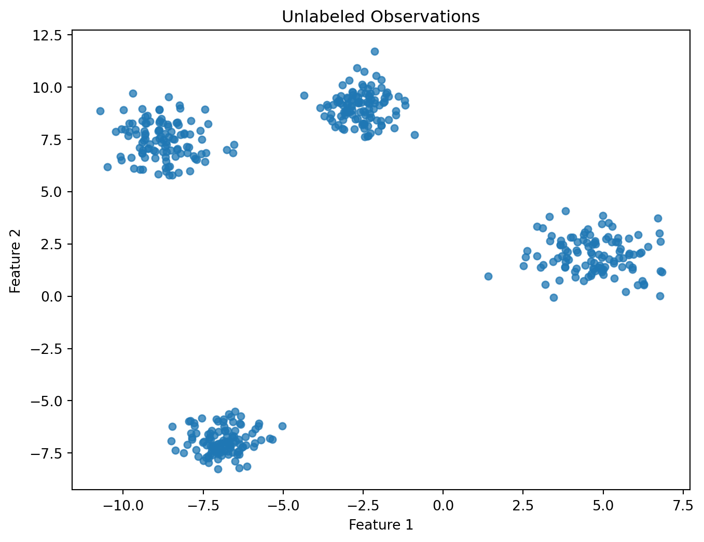
We retain y_hidden only because this is simulated instructional data. The clustering algorithm will not receive it.
Clustering language often suggests that groups already exist in the data and the algorithm simply discovers them.
Sometimes that is a useful approximation.
But a clustering result depends on analytical choices such as
\[ \boxed{ \text{Features} + \text{Scaling} + \text{Distance} + \text{Algorithm} + \text{Hyperparameters} \rightarrow \text{Clusters} } \]
Change those choices and the apparent groups may change.
Consider observations measured on two variables with very different scales.
import numpy as np
import matplotlib.pyplot as plt
from sklearn.cluster import KMeans
from sklearn.preprocessing import StandardScaler
rng_cr = np.random.default_rng(42)
group_a_cr = np.column_stack([
rng_cr.normal(0, 0.6, 120),
rng_cr.normal(20, 7, 120)
])
group_b_cr = np.column_stack([
rng_cr.normal(3, 0.6, 120),
rng_cr.normal(35, 7, 120)
])
X_cr = np.vstack([
group_a_cr,
group_b_cr
])
labels_raw_cr = KMeans(
n_clusters=2,
n_init=20,
random_state=42
).fit_predict(X_cr)
X_scaled_cr = StandardScaler().fit_transform(X_cr)
labels_scaled_cr = KMeans(
n_clusters=2,
n_init=20,
random_state=42
).fit_predict(X_scaled_cr)
plt.figure(figsize=(8, 5))
plt.scatter(
X_cr[:, 0],
X_cr[:, 1],
c=labels_raw_cr,
cmap="tab10",
s=24,
alpha=0.7
)
plt.xlabel("Feature 1")
plt.ylabel("Feature 2")
plt.title("k-Means Using the Raw Representation")
plt.show()
plt.figure(figsize=(8, 5))
plt.scatter(
X_scaled_cr[:, 0],
X_scaled_cr[:, 1],
c=labels_scaled_cr,
cmap="tab10",
s=24,
alpha=0.7
)
plt.xlabel("Standardized feature 1")
plt.ylabel("Standardized feature 2")
plt.title("k-Means After Standardization")
plt.show()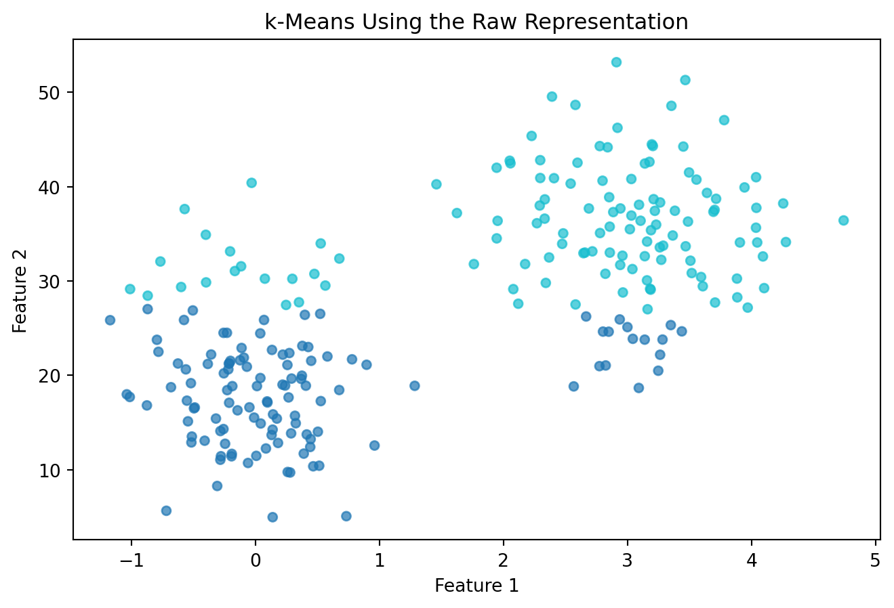
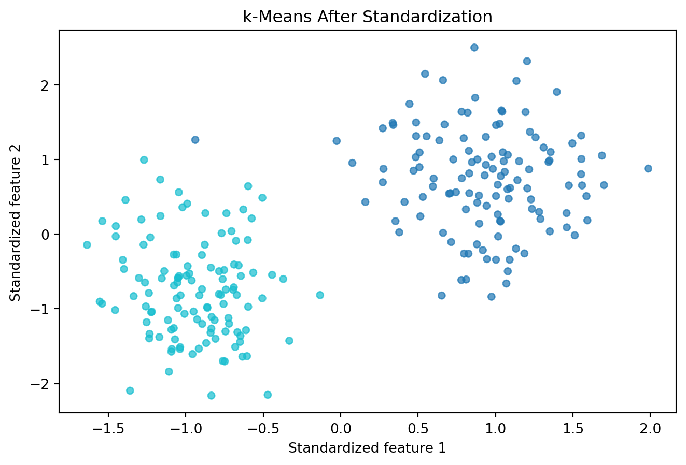
The observations are the same. The geometry supplied to the algorithm is different.
A cluster should not automatically be interpreted as a naturally occurring type.
In health analytics, a cluster of patients may reflect measurement choices rather than distinct biological subtypes.
In education, student clusters may reflect institutional variables and scaling choices rather than fixed “types of learners.”
In Open ML, customer segments may change when behavioral, demographic, or transactional features are added or removed.
Therefore, cluster interpretation should include:
\(k\)-means seeks \(K\) cluster centers, or centroids, following one of the foundational formulations of partition-based clustering (MacQueen 1967):
\[ \mu_1,\mu_2,\ldots,\mu_K. \]
It minimizes the within-cluster sum of squares:
\[ J = \sum_{k=1}^{K} \sum_{x_i\in C_k} \|x_i-\mu_k\|^2. \]
This objective encodes a particular notion of a good cluster:
observations should be close to their assigned centroid under squared Euclidean distance.
A simplified iteration is:
The centroid for cluster \(C_k\) is
\[ \mu_k = \frac{1}{|C_k|} \sum_{x_i\in C_k}x_i. \]
from sklearn.cluster import KMeans
kmeans=KMeans(
n_clusters=4,
n_init="auto",
random_state=42
)
labels=kmeans.fit_predict(X_demo)
centers=kmeans.cluster_centers_
plt.figure(figsize=(8,6))
plt.scatter(
X_demo[:,0],
X_demo[:,1],
c=labels,
cmap="tab10",
s=25,
alpha=.75
)
plt.scatter(
centers[:,0],
centers[:,1],
marker="X",
s=220,
edgecolors="black",
linewidths=1.5
)
plt.xlabel("Feature 1")
plt.ylabel("Feature 2")
plt.title("$k$-Means Clustering")
plt.show()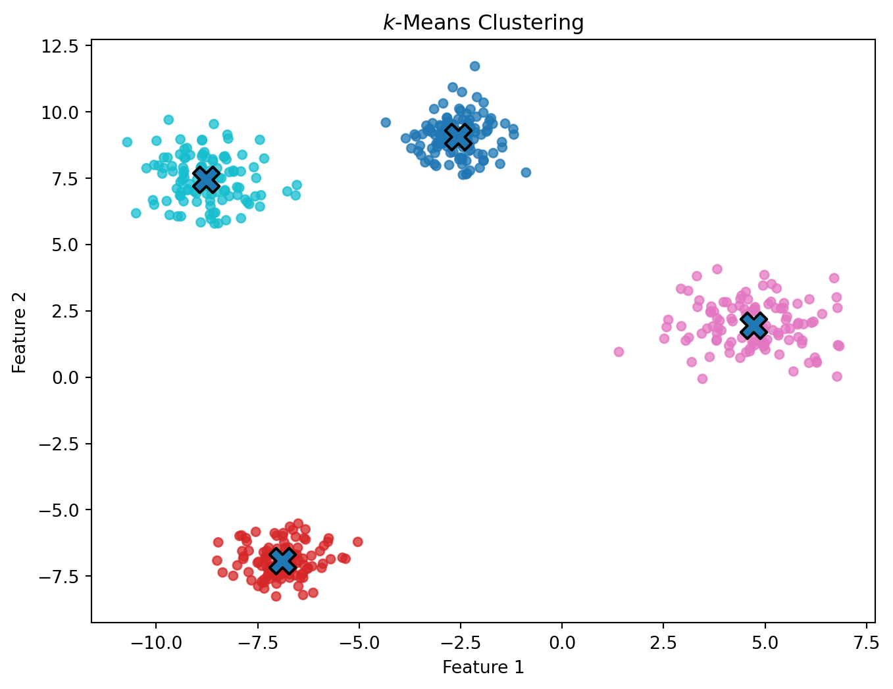
Cluster numbers such as 0, 1, 2, and 3 are arbitrary identifiers. Cluster 3 is not inherently “greater” than Cluster 1.
The \(k\)-means objective is nonconvex. Different initial centroids can lead to different local solutions.
Modern implementations use careful initialization strategies and multiple starts to improve robustness.
This is why reproducibility requires documenting:
One of the most common mistakes in clustering is treating \(K\) as if the data contain a single objectively correct answer waiting to be revealed.
Usually, choosing \(K\) requires multiple forms of evidence.
As \(K\) increases, within-cluster sum of squares cannot increase.
ks=range(1,11)
inertia=[]
for k in ks:
m=KMeans(n_clusters=k,n_init="auto",random_state=42)
m.fit(X_demo)
inertia.append(m.inertia_)
plt.figure(figsize=(8,5))
plt.plot(list(ks),inertia,marker="o")
plt.xlabel("Number of clusters, K")
plt.ylabel("Within-cluster sum of squares")
plt.title("Elbow Analysis")
plt.show()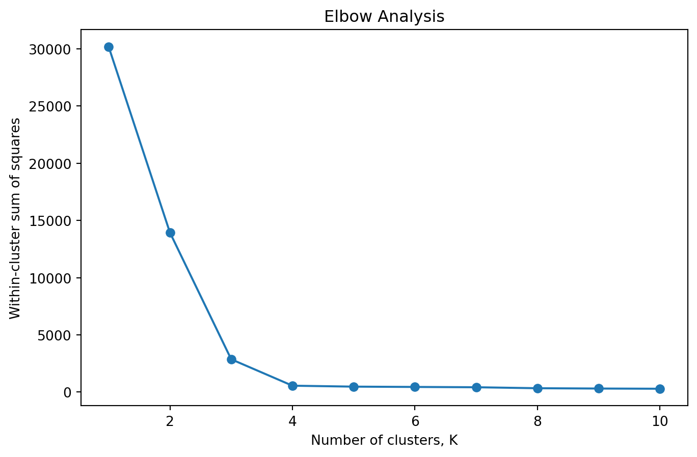
The elbow method is a heuristic. Some datasets have no obvious elbow; analysts can disagree about where it occurs.
Silhouette analysis provides an internal diagnostic of how well an observation fits its assigned cluster relative to neighboring clusters (Rousseeuw 1987).
For observation \(i\), let:
The silhouette coefficient is
\[ s(i) = \frac{b(i)-a(i)} {\max\{a(i),b(i)\}}. \]
Values approach 1 when an observation is well matched to its cluster and separated from alternatives.
Values near 0 suggest boundary ambiguity.
Negative values suggest that another cluster may be closer on average.
from sklearn.metrics import silhouette_score
silhouette_results={}
for k in range(2,11):
m=KMeans(n_clusters=k,n_init="auto",random_state=42)
lab=m.fit_predict(X_demo)
silhouette_results[k]=silhouette_score(X_demo,lab)
silhouette_results{2: np.float64(0.6088044351869154),
3: np.float64(0.7802566243321948),
4: np.float64(0.8330144678792226),
5: np.float64(0.7080931183466258),
6: np.float64(0.6966266351282295),
7: np.float64(0.5545070229283066),
8: np.float64(0.4838105325521525),
9: np.float64(0.33827775339131916),
10: np.float64(0.3376676801209995)}plt.figure(figsize=(8,5))
plt.plot(
list(silhouette_results.keys()),
list(silhouette_results.values()),
marker="o"
)
plt.xlabel("Number of clusters, K")
plt.ylabel("Mean silhouette score")
plt.title("Silhouette Analysis")
plt.show()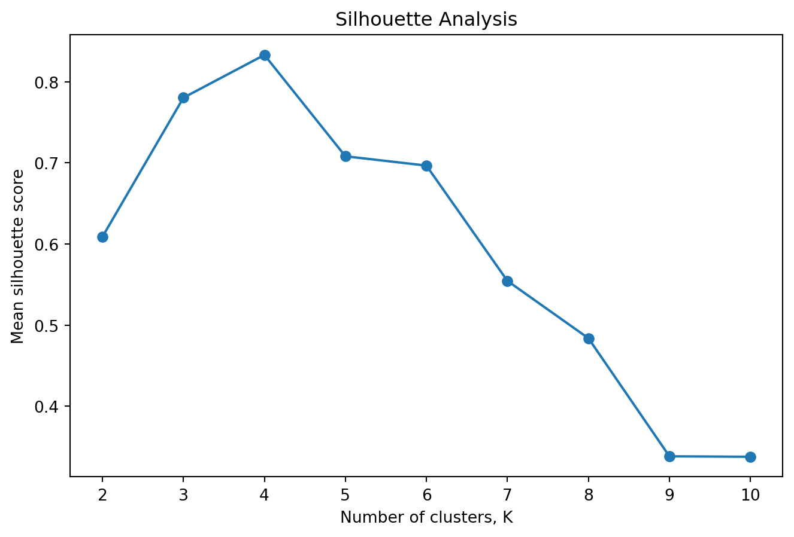
A high silhouette score does not prove that the clusters are substantively meaningful.
Internal criteria evaluate properties created by the same representation and distance structure used to construct the clusters.
A clustering solution may have excellent compactness and separation while being:
Thus,
\[ \boxed{\text{geometric separation}} \neq \boxed{\text{substantive validity}}. \]
After clustering, analysts often summarize feature values by cluster.
import pandas as pd
demo_df=pd.DataFrame(
X_demo,
columns=["feature_1","feature_2"]
)
demo_df["cluster"]=labels
demo_df.groupby("cluster").mean()| feature_1 | feature_2 | |
|---|---|---|
| cluster | ||
| 0 | -2.572844 | 9.058350 |
| 1 | -6.896603 | -6.920223 |
| 2 | 4.707056 | 1.955797 |
| 3 | -8.777294 | 7.456918 |
Profiles describe the fitted partition.
They do not establish why the groups exist or whether the same groups will appear in another sample.
Hierarchical clustering creates a nested sequence of groupings rather than requiring a single flat partition from the beginning.
Agglomerative clustering begins with each observation as its own cluster and repeatedly merges clusters.
Conceptually,
\[ n\text{ clusters} \rightarrow n-1 \rightarrow n-2 \rightarrow \cdots \rightarrow 1. \]
The critical question becomes:
How do we measure distance between clusters?
Distance between the closest pair of observations across two clusters.
Distance between the farthest pair.
Average pairwise distance between observations across clusters.
Merges clusters to minimize the increase in within-cluster variance.
Different linkage definitions can produce very different structures.
A dendrogram visualizes the hierarchy of merges.
from scipy.cluster.hierarchy import linkage,dendrogram
sample=X_demo[:80]
Z=linkage(sample,method="ward")
plt.figure(figsize=(12,6))
dendrogram(Z,no_labels=True)
plt.xlabel("Observations")
plt.ylabel("Merge distance")
plt.title("Hierarchical Clustering Dendrogram")
plt.show()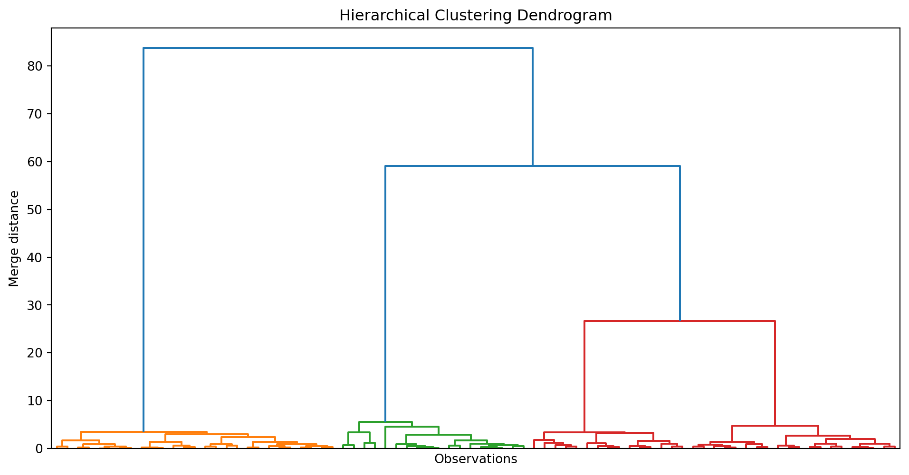
A horizontal cut produces a particular number of clusters, but the dendrogram itself does not dictate one universally correct cut.
from sklearn.cluster import AgglomerativeClustering
agg=AgglomerativeClustering(
n_clusters=4,
linkage="ward"
)
agg_labels=agg.fit_predict(X_demo)
plt.figure(figsize=(8,6))
plt.scatter(
X_demo[:,0],
X_demo[:,1],
c=agg_labels,
cmap="tab10",
s=25,
alpha=.75
)
plt.xlabel("Feature 1")
plt.ylabel("Feature 2")
plt.title("Agglomerative Clustering")
plt.show()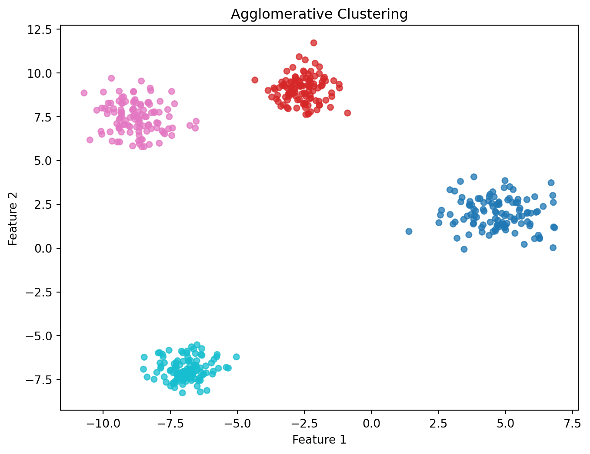
\(k\)-means prefers compact centroid-centered clusters.
But what if clusters are curved or irregular?
Consider two interlocking moons.
from sklearn.datasets import make_moons
X_moons,_=make_moons(
n_samples=500,
noise=.07,
random_state=42
)
plt.figure(figsize=(8,6))
plt.scatter(X_moons[:,0],X_moons[:,1],s=22,alpha=.75)
plt.xlabel("Feature 1")
plt.ylabel("Feature 2")
plt.title("Unlabeled Nonconvex Structure")
plt.show()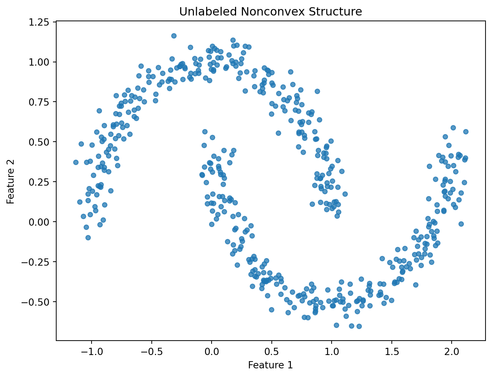
moon_kmeans=KMeans(
n_clusters=2,
n_init="auto",
random_state=42
)
moon_k_labels=moon_kmeans.fit_predict(X_moons)
plt.figure(figsize=(8,6))
plt.scatter(
X_moons[:,0],
X_moons[:,1],
c=moon_k_labels,
cmap="tab10",
s=22
)
plt.xlabel("Feature 1")
plt.ylabel("Feature 2")
plt.title("$k$-Means on Two Moons")
plt.show()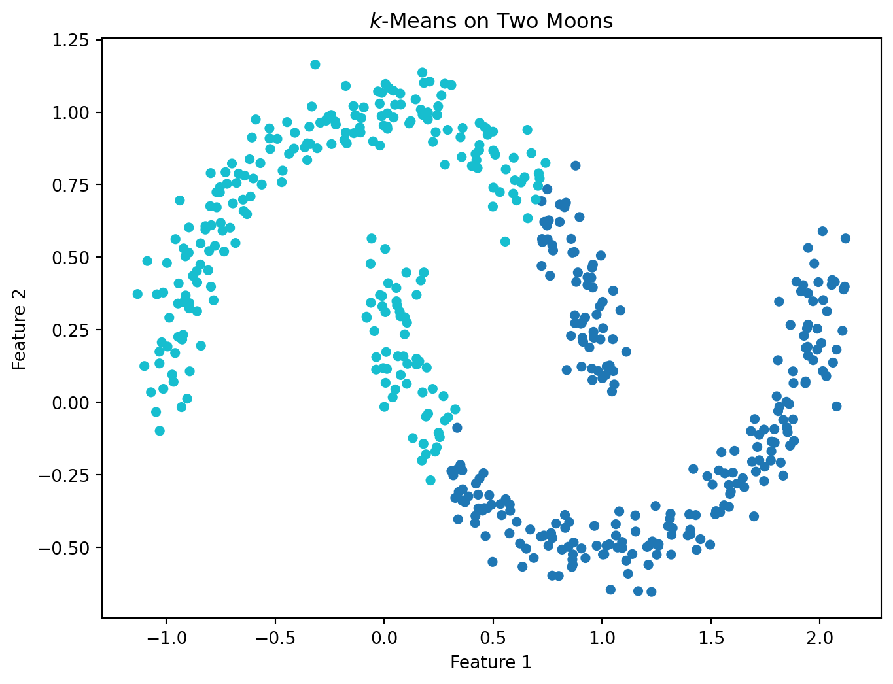
This is not a failure of optimization. It is a mismatch between the algorithm’s notion of cluster structure and the geometry of the data.
DBSCAN—Density-Based Spatial Clustering of Applications with Noise—defines clusters through regions of sufficient local density.
Two important parameters are:
eps) — neighborhood radius;min_samples — minimum observations required for a sufficiently dense neighborhood.For an observation \(x_i\), define its \(\varepsilon\)-neighborhood:
\[ N_\varepsilon(x_i) = \{x_j:d(x_i,x_j)\le\varepsilon\}. \]
A core point has sufficiently many observations in this neighborhood.
A border point is reachable from a core region but does not itself meet the core density requirement.
A noise point is not assigned to a cluster under the fitted density rule.
from sklearn.cluster import DBSCAN
from sklearn.preprocessing import StandardScaler
X_moons_scaled=StandardScaler().fit_transform(X_moons)
dbscan=DBSCAN(
eps=.25,
min_samples=5
)
db_labels=dbscan.fit_predict(X_moons_scaled)
plt.figure(figsize=(8,6))
plt.scatter(
X_moons[:,0],
X_moons[:,1],
c=db_labels,
cmap="tab10",
s=22
)
plt.xlabel("Feature 1")
plt.ylabel("Feature 2")
plt.title("DBSCAN on Two Moons")
plt.show()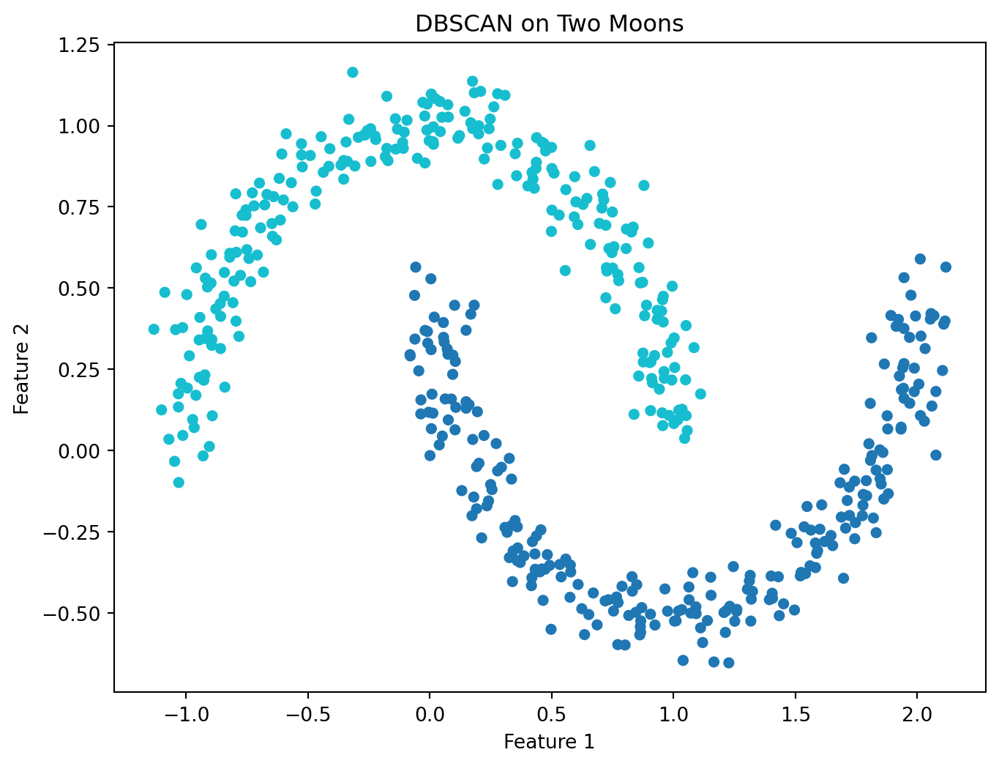
DBSCAN can discover irregularly shaped clusters and explicitly label some observations as noise.
But it is sensitive to the density scale implied by eps, min_samples, preprocessing, and the data distribution.
| Method | A cluster is approximately… | Key assumptions/choices |
|---|---|---|
| \(k\)-means | observations near a centroid | \(K\), squared Euclidean geometry |
| hierarchical | observations joined within a merge hierarchy | distance, linkage, cut |
| DBSCAN | a connected region of sufficient density | eps, min_samples, distance |
These algorithms are not merely alternative software commands.
They encode different answers to:
What kind of structure counts as a group?
If small changes in the data produce completely different clusters, interpretation should be cautious.
A practical stability investigation might:
For two partitions with known correspondence, the Adjusted Rand Index (ARI) is one possible agreement measure:
from sklearn.metrics import adjusted_rand_score
rng=np.random.default_rng(42)
indices=rng.choice(
len(X_demo),
size=int(.9*len(X_demo)),
replace=False
)
m_full=KMeans(n_clusters=4,n_init="auto",random_state=42).fit(X_demo)
m_subset=KMeans(n_clusters=4,n_init="auto",random_state=42).fit(X_demo[indices])
full_labels_on_subset=m_full.predict(X_demo[indices])
subset_labels=m_subset.labels_
adjusted_rand_score(full_labels_on_subset,subset_labels)1.0This demonstration is intentionally simple. Rigorous cluster stability can require more careful resampling and label-alignment strategies.
Sometimes variables not used to construct clusters can help assess whether a partition has external relevance.
For example, after clustering on pre-intervention measurements, researchers might compare clusters on a later outcome.
But caution is essential:
Yes.
If you ask \(k\)-means for \(K=4\), it will return four clusters even when the underlying distribution is continuous and contains no natural four-group structure.
rng=np.random.default_rng(10)
continuous=rng.multivariate_normal(
mean=[0,0],
cov=[[1,.75],[.75,1]],
size=500
)
forced=KMeans(
n_clusters=4,
n_init="auto",
random_state=42
).fit_predict(continuous)
plt.figure(figsize=(8,6))
plt.scatter(
continuous[:,0],
continuous[:,1],
c=forced,
cmap="tab10",
s=22
)
plt.xlabel("Feature 1")
plt.ylabel("Feature 2")
plt.title("Four Clusters Imposed on Continuous Structure")
plt.show()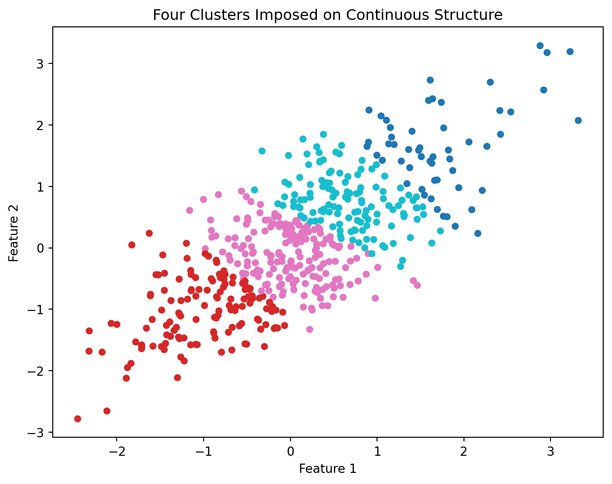
The colors are real outputs of the algorithm.
That does not mean four natural populations existed before we requested them.
Computer vision also contains unsupervised workloads. Suppose image labels are unavailable and we ask whether visually similar observations form useful groups.
Using handwritten digits, we can cluster flattened images without supplying digit labels to (k)-means. Known labels are retained only for post hoc evaluation, not fitting.
import os
os.environ["LOKY_MAX_CPU_COUNT"] = "1"
from sklearn.datasets import load_digits
from sklearn.preprocessing import StandardScaler
from sklearn.cluster import KMeans
from sklearn.metrics import adjusted_rand_score
digits_cluster_cv = load_digits()
X_cluster_cv = digits_cluster_cv.data
y_cluster_cv = digits_cluster_cv.target
X_cluster_scaled_cv = StandardScaler().fit_transform(X_cluster_cv)
kmeans_digits_cv = KMeans(
n_clusters=10,
n_init=20,
random_state=42
)
clusters_digits_cv = kmeans_digits_cv.fit_predict(X_cluster_scaled_cv)
adjusted_rand_score(y_cluster_cv, clusters_digits_cv)0.4779623470372548The adjusted Rand index compares the discovered partition with known labels while accounting for agreement expected by chance. Cluster numbers do not need to match digit numbers.
A modest score would not necessarily mean clustering “failed.” (k)-means optimizes geometric compactness, not semantic digit identity.
\[ \boxed{\text{Visual Similarity Under a Representation}\neq\text{Semantic Identity}} \]
Potential applications include exploratory phenotyping, behavioral profiles, or patterns of health measurements. Avoid turning clusters into diagnoses without clinical validation. Consider measurement scale, missingness, stability, external replication, and whether continuous variation is being artificially discretized.
Clustering may explore patterns of engagement, course-taking, or academic behavior. Avoid labels such as “at-risk learner type” unless the evidence supports a stable and useful construct. Student segments can become self-fulfilling if descriptive clusters are treated as identities.
Simulated blobs, moons, circles, and varying-density datasets allow students to test which definitions of structure are favored by \(k\)-means, hierarchical methods, and DBSCAN.
Give an AI assistant a table of cluster means and ask it to name each cluster.
It may quickly produce labels such as:
Audit those labels.
Ask:
Rewrite the labels descriptively before using interpretive names.
Using a health, education, or benchmark dataset:
A practitioner should be able to choose clustering methods based on the desired notion of similarity, scale features appropriately, use internal diagnostics without treating them as proof, and communicate clusters as operational segments rather than unquestioned truths.
A researcher should additionally examine stability, external replication, sensitivity to preprocessing and algorithm choice, uncertainty in cluster interpretation, and whether discrete groups are scientifically defensible relative to continuous alternatives.
Design a clustering study suitable for a conference or journal paper.
Specify:
A university clusters 20,000 students using attendance, LMS activity, GPA, financial holds, advising contacts, and course withdrawals.
The analyst runs \(k\)-means with \(K=4\) because administrators requested “four student types.” The four resulting groups are labeled:
The mean silhouette score is 0.41.
Administrators propose automatically assigning different advising interventions based on cluster membership.
Critique:
Design a stronger exploratory study before deployment.
eps and min_samples play?Record: